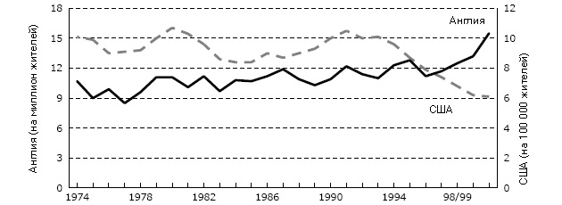
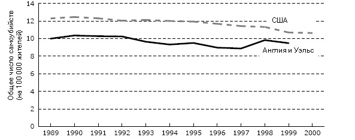
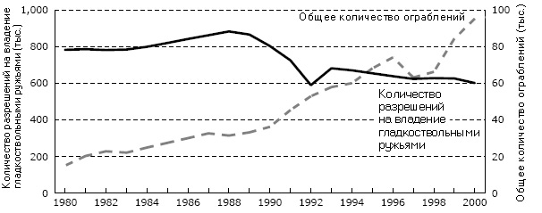
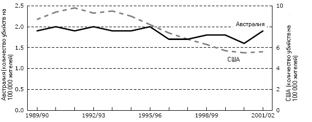
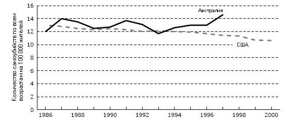
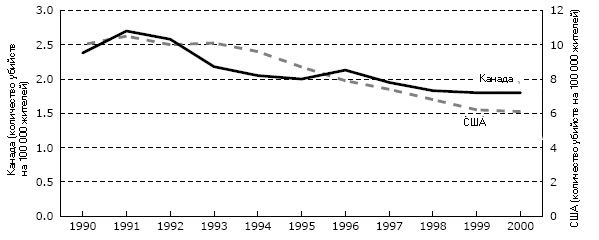
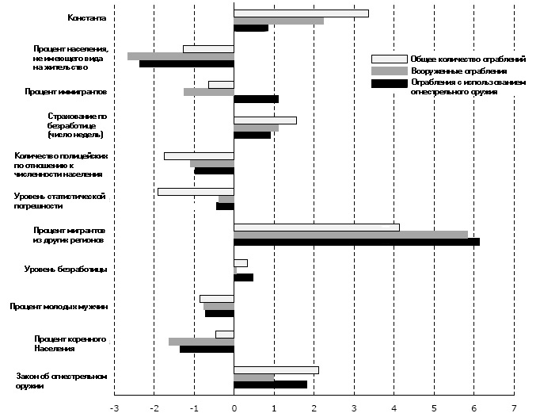
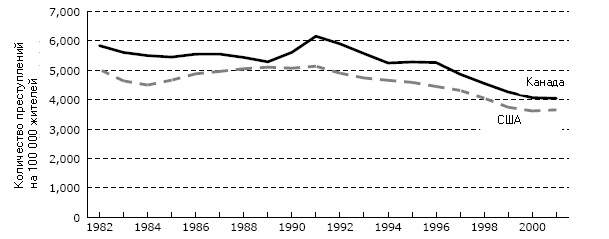

Провалившийся эксперимент
Краткое содержание
В конце XX века ряд жестоких убийств с применением огнестрельного оружия, получивших широкую известность благодаря телевидению, побудил политиков разных стран ужесточить законы об обороте огнестрельного оружия. Они обещали, что новые ограничения приведут к снижению уровня насильственных преступлений и позволят «создать безопасное для жизни общество». Пришло время выяснить, насколько эффективно эти законы помогают бороться с преступностью.
Необходимо на основании фактов доказать, что ужесточение контроля над оружием действительно улучшает ситуацию в этой области, иначе обещания политиков следует воспринимать как пустой звук. Подобные меры многим из нас кажутся правильными из-за убежденности в том, что именно доступность огнестрельного оружия приводит к росту числа тяжких преступлений и, главное, что ограничение этого доступа позволяет снизить уровень криминального насилия.
В настоящей работе я проанализирую эволюцию проблемы преступности в странах Британского Содружества, где недавно были приняты законы о контроле над огнестрельным оружием, — Великобритании, Австралии и Канады. Недостаточно используемый, но важнейший критерий оценки регулирования оборота оружия связан с анализом общих тенденций в сфере насильственной преступности, а не только статистики преступлений с использованием огнестрельного оружия. Поскольку на долю огнестрельного оружия приходится лишь небольшая часть криминального насилия, безопасность людей не повысится, если новые законы приведут только к сокращению этой категории преступности, но не повлияют на общее количества преступлений против личности.
В ходе оценки уровней преступности в указанных странах представляется целесообразным сопоставить их с ситуацией в Соединенных Штатах, поскольку там система уголовного правосудия разительно отличается от той, что существует в Европе и странах Британского Содружества. Так, в США уголовные наказания, как правило, жестче, а зачастую намного жестче; кроме того, там в целом существенно выше процент дел, заканчивающихся для обвиняемых осуждением и лишением свободы. Но наиболее явное различие заключается в том, что в Америке граждане, получившие соответствующее разрешение, имеют право носить ручное огнестрельное оружие в целях самообороны, не выставляя его напоказ. За последние десятилетия более 25 штатов приняли законы, позволяющие ответственным гражданам носить огнестрельное оружие. По данным на 2003 год, подобное разрешение могут получить жители 35 штатов.
При этом количество преступлений против личности и особенно убийств в Соединенных Штатах сокращается. Снижение уровня преступности в Америке выглядит особенно впечатляющим по сравнению с ситуацией в других странах. В 18 из 25 государств, фигурировавших в исследовании, проведенном британским Министерством внутренних дел, количество преступлений против личности в 1990-х годах увеличилось. Подобный контраст должен заставить мыслящих людей задаться вопросом: а как обстоит дело в тех странах, где законодательство по контролю над оборотом огнестрельного оружия постоянно ужесточается?
Британия
За последние 20 лет как консервативные, так и лейбористские правительства приняли ряд законов об ограничении оборота огнестрельного оружия; в 1997 году владение ручным огнестрельным оружием было полностью запрещено. К сожалению, эти драконовские меры регулирования оказались абсолютно безрезультатными. Сегодня ситуация с общественной безопасностью не только не улучшилась, но, возможно, даже ухудшилась. Полицейская статистика показывает, что Англия и Уэльс столкнулись с серьезным всплеском преступности. В отличие от «вооруженных до зубов» Соединенных Штатов, где количество убийств уже более 20 лет неуклонно сокращается, в Англии и Уэльсе, несмотря на запрет огнестрельного оружия, оно растет. Только за 1990-е годы оно увеличилось на 50% — с 10 на миллион жителей в 1990 году до 15 на миллион жителей в 2000-м.
По данным полицейской статистики, уровень насильственной преступности в целом увеличивается, начиная с конца 1980-х годов, а с середины 1990-х он даже превысил соответствующий показатель для США (по отношению к численности населения). Новые законы, возможно, даже способствовали росту преступлений против личности, поскольку граждане оказались безоружными. Несмотря на запрет и конфискацию всего ручного огнестрельного оружия в Британии насильственная преступность, в том числе и с его применением, продолжает расти.
Австралия
После страшного массового убийства в 1996 году правительство Австралии уже на следующий год внесло радикальные изменения в действующее законодательство об огнестрельном оружии. К сожалению, после принятых мер на улицах не стало безопаснее. Общее количество убийств, практически неизменное с 1995 по 2001 год, сегодня вновь начинает расти. Таким образом, по сравнению со снижением уровня таких преступлений в США с их либеральным отношением к огнестрельному оружию мы наблюдаем абсолютно противоположную тенденцию.
Различие между ситуацией в Австралии и Соединенных Штатах проявляется еще нагляднее, если речь идет о количестве преступлений против личности в целом. В США оно также сокращается, а в Австралии растет. За последние шесть лет общий уровень подобной преступности в стране постоянно увеличивался. В частности, учащаются ограбления, в том числе вооруженные. Количество вооруженных ограблений в Австралии выросло на 166%. Конфискация и уничтожение огнестрельного оружия, находившегося в законном владении граждан, обошлось налогоплательщикам как минимум в 500 миллионов долларов. Расходы на полицейский бюрократический аппарат, в том числе весьма дорогостоящую службу регистрации огнестрельного оружия, с 1997 года повысились на 200 миллионов долларов. И ради чего все это? Заметного влияния на количество насильственных преступлений эти меры не оказали. А если уровень преступности не снижается, чем можно оправдать такую сумму потраченных денег налогоплательщиков? Ведь на эти средства правоохранительные органы можно было бы оснастить большим количеством патрульных машин, сократить рабочую смену для полицейских, вероятно, даже закупить более современное оборудование. Подумайте, сколько жизней было бы спасено.
Канада
В 1991 и 1995 годах законодательство об огнестрельном оружии было коренным образом пересмотрено. Поэтапное введение системы лицензирования и регистрации продолжается до сих пор. Контраст между уровнем криминального насилия в США и Канаде просто поражает. За последние десять лет количество преступлений против личности в Канаде увеличилось, а в Соединенных Штатах — резко снизилось.
Канадский эксперимент с регулированием оборота огнестрельного оружия превращается просто в фарс. По данным Генерального аудитора, расходы на составление полного реестра огнестрельного оружия, находящегося во владении граждан, которые, как предполагалось, должны были составить всего 2 миллиона долларов, уже превысили миллиард. Трудно сказать, какова будет окончательная стоимость программы, но если включить в нее расходы на правоприменительные меры, она вполне может достичь 3 миллиардов долларов. Налогоплательщикам стоило бы потребовать создания независимого органа для сравнительной оценки расходов и результативности регистрации, чтобы получить представление о том, во что им обходится эта программа.
Законы об ограничении оборота огнестрельного оружия не привели к снижению уровня насильственной преступности в Австралии, Канаде и Великобритании. Меры по конфискации такого оружия у граждан обернулись весьма дорогостоящей неудачей. Количество преступлений против личности не уменьшается, а продолжает расти. К сожалению, по политическим соображениям нынешняя политика, скорее всего, будет продолжаться и, что еще важнее, не получит критической оценки.
Только в Соединенных Штатах уровень криминального насилия за последнее десятилетие резко снизился. Возможно, политикам из стран Содружества пора пересмотреть свою традиционную антипатию к законному владению огнестрельным оружием.
Мнение о том, что запретами на огнестрельное оружие можно повысить безопасность граждан, иллюзорно. Ни один закон, даже самый жесткий, не способен защитить нас от тех, кто решился на преступление. Так может быть, бороться следует с преступниками, а не с охотниками и любителями пострелять в тире?
Введение
Ряд жестоких убийств с применением огнестрельного оружия во Франции, Германии и Швейцарии, произошедших в последние годы и получивших широкую известность благодаря телевидению, побудил политиков ужесточить законы об обороте огнестрельного оружия. Большинство из нас наверняка помнит по новостям историю страдавшего депрессией немецкого подростка, который после исключения из школы в приступе бешенства застрелил несколько человек в школьном здании. Помним мы и то, как во Франции и Швейцарии разъяренные люди врывались в здания местных советов и открывали огонь по их сотрудникам, похоже, не разбирая правых и виноватых.
Такое случалось и раньше. По телевидению мы уже наблюдали за подобными трагедиями в Австралии, Великобритании, Канаде, США и других странах. События развиваются по известной схеме: сначала происходит нечто ужасное — скажем, недовольный ученик убивает одноклассников или сумасшедший устраивает кровавую бойню в общественном месте. Несколько недель произошедшее активно освещается в СМИ. Затем правительство, считая необходимым продемонстрировать свою способность защитить граждан, дает полиции новые широкие полномочия и еще больше ограничивает право людей на владение огнестрельным оружием. Утверждается, что эти ограничения позволят сократить уровень насильственной преступности и сделать общество «безопасным для жизни». После этого СМИ переключают внимание на новую сенсацию, и люди забывают о случившемся. Через какое-то время происходит новое ужасное происшествие такого рода, и все начинается снова. Именно по такому сценарию развивались события при принятии практически всех законов о регулировании оборота огнестрельного оружия за последние полвека. Так давайте сделаем паузу и зададимся вопросом: если цель таких законов — предотвращение насильственных преступлений, то насколько они на практике способствуют этому?
Политики обещают, что усиление регулирования оборота огнестрельного оружия позволяет сократить число преступлений против личности и повысить безопасность граждан. Кое-кто утверждает даже, что оно позволит снизить уровень самоубийств. Но так ли это? Действительно ли ограничение права владения огнестрельным оружием приводит к сокращению числа убийств, или вооруженных ограблений, или преступлений против личности в целом, или суицидов? Одним словом, действительно ли они делают наше общество более безопасным, как утверждают их сторонники?
Если законы, ограничивающие возможности людей иметь огнестрельное оружие, призваны снизить уровень насильственных преступлений, это следует доказать на основании фактов: в противном случае все эти обещания — не более чем пустой звук. Однако криминологи (пусть и с неохотой) признают: эмпирические данные не дают особых оснований утверждать, что ужесточение доступа населения к огнестрельному оружию снижает уровень насильственной преступности[1]. Утверждения об обратном зачастую представляют собой попытки выдать желаемое за действительное.
При этом нельзя сказать, что никто не предупреждает об этом государственные органы. Так, Комиссия Каллена получила ряд материалов из разных источников (в том числе от английского ученого, бывшего суперинтенданта полиции Колина Гринвуда), говорящих о том, что ужесточение ограничений не является эффективным способом борьбы с преступлениями против личности (Munday, Stevenson 1996; Greenwood 1972). В Канаде перед принятием законопроекта С-68, вводившего систему регистрации огнестрельного оружия и лицензий на владение им, Генеральный аудитор предупреждал правительство, что министр юстиции не представил убедительных обоснований необходимости нового закона, а анализ эффективности действующего законодательства в этой области не проводился (Auditor General of Canada 1993: 647–655). Я сам, выступая перед парламентской комиссией, отмечал, что регистрация всего огнестрельного оружия в стране — мера «неосуществимая, неэффективная и до неприличия дорогая» (Mauser 1995: 25). В то время я считал, что она обойдется налогоплательщикам в миллиард долларов (Ibid, 28). В 2002 году Управление Генерального аудитора Канады подтвердило мой прогноз (Auditor General of Canada 2002, сhap. 10). К сожалению, обе наши оценки оказались заниженными, поскольку в них не учитываются расходы других государственных органов, участвующих в реализации программы, и расходы на правоприменительные меры. Согласно наиболее реалистичному из имеющихся на сегодняшний день прогнозов, общие затраты государства на лицензирование владельцев и регистрацию всего огнестрельного оружия в стране составят почти 3 миллиарда долларов (Breitkreuz 2003).
В настоящей работе анализируется обоснованность утверждений о том, что введенные в последние годы законоположения, ограничивающие доступ граждан к огнестрельному оружию, способствуют повышению уровня безопасности в обществе за счет сокращения преступности. При этом мы будем изучать не вопрос о том, приводят ли эти законы к снижению (или росту) преступлений с использованием огнестрельного оружия. Эта проблема не главная: будем исходить из допущения, что хотя бы эту категорию преступности меры по контролю над оружием должны сократить[2]. Важнейший вопрос заключается в другом: способствуют ли они улучшению ситуации в сфере общественной безопасности в целом? Необходимо иметь в виду: даже если количество преступлений с использованием огнестрельного оружия после введения таких законов сокращается, это не исключает повышения общего уровня насильственной преступности — со всеми негативными последствиями для безопасности граждан. Это связано с тем, что преступления против личности с использованием огнестрельного оружия составляют лишь небольшой (а зачастую очень небольшой) процент от общего числа насильственных преступлений. Чтобы проверить обоснованность утверждения о том, что ограничение доступа граждан к огнестрельному оружию позволяет снизить уровень криминального насилия в обществе, мы рассмотрим тенденции в этой области в нескольких странах, недавно принявших подобные законы. По возможности мы будем сопоставлять ситуацию в этих странах с тенденциями в сфере криминального насилия в Соединенных Штатах.
Оценивать воздействие указанных изменений в законодательстве необходимо за достаточно длительный хронологический период. В данной работе мы изучим тенденции в сфере преступности по каждой из стран, чтобы выяснить, произошли ли здесь какие-либо изменения после принятия законов о контроле над огнестрельным оружием. Мы отобрали те категории преступлений, которые нагляднее всего свидетельствуют о ситуации с общественной безопасностью: убийства, преступления против личности и покушения на имущество граждан. Кроме того, мы оценим и динамику количества самоубийств, поскольку борцы с огнестрельным оружием утверждают, что сокращение доступа к нему уменьшает у психологически нестойких людей соблазн покончить счеты с жизнью.
Очевидно, сопоставление средних показателей по странам для целей нашего исследования нецелесообразно. Нас в данном случае не интересует, где выше, а где ниже уровень того или иного вида преступлений — в США, Канаде или Англии. Эти показатели отражают скорее исторические и культурные различия, а не эффективность недавних законов об огнестрельном оружии. К нашей теме относится лишь динамика этих преступлений. Если количество убийств до введения закона было небольшим и осталось таковым в дальнейшем, можно ли утверждать, что именно с усилением контроля над оружием связаны низкие показатели в этой области?
Следует отметить также, что сопоставление уровня преступности в США с ситуацией в Европе и странах Британского Содружества представляется особенно уместным из-за уникальности американской системы уголовного правосудия[3]. И дело не только в том, что в США уголовные наказания как правило жестче, а зачастую намного жестче, а процент дел, заканчивающихся для обвиняемых осуждением и лишением свободы, существенно выше[4]. Наиболее явное различие, пожалуй, заключается в том, что Америка — одна из немногих стран, где гражданам, получившим соответствующее разрешение, разрешено носить ручное огнестрельное оружие в целях самообороны, не выставляя его напоказ. За последние десятилетия, пока в Британии и странах Содружества стать владельцем огнестрельного оружия становилось все труднее, более 25 американских штатов приняли законы, позволяющие ответственным гражданам носить огнестрельное оружие. По данным на 2003 год, подобное разрешение могут получить жители 35 штатов. В результате почти 3 миллиона американцев обоего пола ходят с оружием по магазинам, улицам или ездят с ним в машине. Каким бы удивительным это ни показалось непосвященному наблюдателю, после принятия таких законов количество преступлений против личности, в том числе убийств, сократилось. Профессор Джон Лотт (John Lott) продемонстрировал, что в тех штатах, где гражданам разрешено носить с собой оружие, уровень насильственной преступности снижается быстрее, чем в остальных[5].
В результате последние десять лет количество преступлений против личности, и особенно убийств, в Соединенных Штатах неуклонно сокращается[6]. Снижение уровня преступности в Америке выглядит особенно впечатляющим по сравнению с ситуацией в других странах. В 18 из 25 государств, фигурировавших в исследовании, проведенном британским Министерством внутренних дел, количество преступлений против личности в 1990-х годах увеличилось (Barclay et al. 1999). Подобный контраст должен заставить мыслящих людей задаться вопросом: а как обстоит дело в тех странах, где власти сочли, что постоянное ужесточение законодательства по контролю над оборотом огнестрельного позволит защитить граждан от криминального насилия?
Огнестрельное оружие и насильственные преступления
Меры по контролю над оборотом огнестрельного оружия кажутся многим правильными из-за убежденности в том, что именно его доступность приводит к росту числа преступлений против личности, и, главное, ограничение этого доступа позволяет снизить уровень криминального насилия. Этот тезис можно проверить эмпирически.
Наиболее подходящим критерием для оценки утверждений о том, что законодательное ужесточение доступа к огнестрельному оружию позволяет улучшить ситуацию с общественной безопасностью, является общий уровень насильственной преступности в целом, или убийств. Понятие «насильственные преступления» относится ко всем правонарушениям, в результате которых жертва получает увечья, и включает преступления, совершенные с использованием любых видов оружия, а не только огнестрельного. Последнее фигурирует лишь в части — нередко очень небольшой — преступлений против личности. Так, в странах, которые изучаются в настоящей работе, огнестрельное оружие используется лишь в 1–26% преступлений против личности (табл. 1).
Таблица 1. Использование огнестрельного оружия в ходе насильственных преступлений в разных странах (% от общего числа насильственных преступлений)
Насильственные преступления Убийства Грабежи Самоубийства Несчастные случаи США (2001) 26 63 42 56 1 Канада (2001) 3 31 14 20 <1 Австралия (2001) 1 (оценочные данные) 14 6 12 Данных нет Англия и Уэльс (2000/2001) 1 (оценочные данные) 9 4 2 Данных нет
Источники: по США: Federal Bureau of Investigation 2003; NCIPC 2003; по Канаде: Kwing Hung, March 2003; Savoie 2002; по Австралии: Australian Institute of Criminology 2003; Mouzos 1999; Mouzos 2003; Reuter, Mouzos 2002; по Англии и Уэльсу: Home Office 2001; Centre for Evidence Based Mental Health 2003.
Даже если речь идет о серьезных преступлениях, таких как убийства и грабежи, где огнестрельное оружие используется чаще всего, такие случаи не составляют большинства. В Австралии, Канаде и Англии лишь 4–14% грабителей используют огнестрельное оружие, а в США — менее половины (42%)[7]. Впрочем, более низкий процент использования огнестрельного оружия в таких преступлениях — не всегда благо. Данные исследований показывают: если при ограблении преступник угрожает огнестрельным оружием, для жертвы дело реже заканчивается увечьем[8].
Преступлениям с использованием огнестрельного оружия уделяется гораздо больше внимания в СМИ, однако их нельзя по определению считать более жестокими, чем другие виды насилия: в конце концов, какая разница, от чего погибает жертва — от удара дубинкой или пули? Мы видим, что в Соединенных Штатах большинство убийств (63%) совершается с применением огнестрельного оружия, тогда как в Австралии, Канаде и Англии люди гибнут от него гораздо реже (9–31% от общего числа убийств)[9]. В странах Британского Содружества убийцы в основном используют нож[10]. К примеру, в Канаде от ножевых ранений погибает такое же количество людей, как и от огнестрельных, а в Австралии оно вдвое больше (Dauvergne 2001: 8; Mouzos 2001).
Хотя самоубийства не относятся к категории насильственных преступлений, они часто фигурируют в ходе дискуссий о насилии с использованием огнестрельного оружия. В странах Содружества, которые стали объектом нашего исследования, относительно немногие (от 4 до 20%) самоубийцы используют огнестрельное оружие. В США и в этом плане ситуация уникальна: чуть больше половины самоубийств (56%) совершается с его применением. Несмотря на это, общий уровень суицидов в Соединенных Штатах ниже, чем в Австралии или Канаде (Australian Bureau of Statistics 2002; Preville 2003; NCIPC 2003).
Вопреки распространенному мнению огнестрельное оружие не отличается и «особой смертоносностью» по сравнению с другими орудиями самоубийства. При повешении или отравлении окисью углерода (например, выхлопными газами автомобиля) смерть в случае попытки суицида наступает столь же часто (Kleck 1991: 258). Представляется очевидным, что, чем тверже человек решил покончить с собой, тем эффективнее будет способ, который он выберет. А поскольку таких способов в распоряжении людей, решивших совершить суицид, достаточно много, запрет одного из них — будь то огнестрельное оружие или поезда метро, под который бросаются самоубийцы, — ничего не изменит.
Несчастные случаи, связанные с огнестрельным оружием, о которых столько говорят в СМИ, на самом деле — явление довольно редкое. Как правило, в развитых странах на долю огнестрельного оружия приходится менее 1% смертей от несчастных случаев. Возможно, именно из-за того, что они происходят так редко, СМИ уделяют им столько внимания и освещают так эмоционально. Автокатастрофы — явление куда более распространенное, и для окружающих представляют гораздо большую опасность, однако мейнстримовские СМИ об этой проблеме почти не упоминают. Это еще один пример того, что освещение той или иной угрозы в прессе не может считаться критерием ее серьезности.
Популярное понятие «смертность от огнестрельного оружия» лишь вводит в заблуждение, поскольку оно сваливает в одну кучу два совершенно различных феномена — убийства и самоубийства, и в результате получается высокая, но ложная цифра (Mauser, Stanbury 2003). Пользоваться этим понятием для оценки эффективности законов об оружии нецелесообразно — по нескольким причинам. Во-первых, при совершении большинства насильственных преступлений огнестрельное оружие не используется, поэтому критерий «смертности от огнестрельного оружия» игнорирует ряд показателей, важных с точки зрения безопасности граждан. Во-вторых, даже несмотря на то, что лишь немногие самоубийцы прибегают к огнестрельному оружию, именно на суициды в развитых странах приходится львиная доля «смертности» от него. К примеру, в Канаде 80% смертей от огнестрельного оружия составляют суициды, а для Австралии этот показатель равен 76%. В-третьих, утверждения о том, что законы об ограничении оборота огнестрельного оружия могут привести к снижению уровня самоубийств, не имеют под собой оснований (Kleck 1997; Jacobs 2002: 6).
Подведем итог: для анализа ситуации с общественной безопасностью в целом наиболее целесообразно применять общие критерии — такие, как уровень насильственной преступности, или количество убийств по отношению к численности населения. Законы о контроле над оборотом огнестрельного оружия, несомненно, призваны сократить число преступлений с его использованием, но главный вопрос состоит в том, способны ли они повлиять на общий уровень криминального насилия. Поскольку преступления с использованием огнестрельного оружия составляют лишь небольшой процент от общего количества, было бы абсолютно неправильно, особенно когда речь идет о странах Британского Содружества, оценивать воздействие любых законов на общественную безопасность на основе таких критериев, как «преступность с использованием огнестрельного оружия» или «смертность от огнестрельного оружия». Несомненно, может сложиться ситуация, когда число преступлений такого рода сокращается (по ряду причин), но общий уровень криминального насилия в обществе при этом растет. В основном разделе настоящей статьи мы рассмотрим вопрос о том, можно ли снизить уровень насильственных преступлений в целом, сосредоточиваясь исключительно на сокращении преступности с использованием огнестрельного оружия.
Действительно ли огнестрельное оружие «провоцирует» убийства?
Сторонники ограничения доступа к огнестрельному оружию часто утверждают, что даже нормального человека владение таким оружием может каким-то образом «спровоцировать» на насильственные действия и даже убийство. Это утверждение ложно. Данный вопрос анализируется в ряде исследований (Kleck 1991: 205–206; Kleck 1997: 222–224), однако в данном случае уместно сказать несколько слов на эту тему, чтобы проиллюстрировать необоснованность подобных утверждений. Возможно, в любом человеке есть не только хорошее, но и плохое, но очень немногие из нас готовы совершить убийство. Убийство — вещь из ряда вон выходящая, и большинство таких преступников нельзя назвать обычными людьми, которые в любой из рассматриваемых нами стран могли бы получить разрешение на законное владение огнестрельным оружием.
В развитых странах подавляющее большинство владельцев огнестрельного оружия — это охотники или любители пострелять по мишеням. Так, в Канаде, как видно из таблицы 2, более двух третей владельцев заявляют, что приобрели огнестрельное оружие для охоты.
Таблица 2. Цель приобретения огнестрельного оружия (% от числа опрошенных)
Охота - 73
Стрельба по мишеням - 13
Отстрел грызунов - 8
Коллекционирование - 6
Самооборона - 5
Иное - 13
Всего - 118
Примечание: сумма ответов превышает 100%, поскольку респонденты могли назвать несколько целей приобретения огнестрельного оружия.
Источник: CPC Research 2001, схема 11.
Таблица 3 показывает, что владельцы огнестрельного оружия — обычные граждане. По отношению к средним показателям структуры населения Канады среди них больше мужчин, людей среднего возраста, у них как правило несколько ниже уровень образования, однако объем доходов превышает среднестатистический.
Таблица 3. Характеристики владельцев огнестрельного оружия и общая структура населения Канады (% от числа опрошенных)
Демографические переменные Владельцы огнестрельного оружия Население в целом Пол Мужской 88 49 Женский 12 51 Возраст , лет 18–34 15 33 35–54 49 40 55 и старше 34 24 Образование Среднее и незаконченное среднее 51 43 Колледж 28 28 Законченное высшее 19 30 Не ответили 2 1 Доход семьи, USD Менее 20,000 8 15 20,000 – 39,999 24 24 40,000 – 59,999 25 19 60,000 и выше 33 27 Не ответили 10 15 Примечание: итоговая цифра может отличаться от 100%, поскольку приводятся округленные данные.
Источник: CPC Research 2001, табл. 5.
Утверждения о том, что убийцами становятся «обычные» люди, — это миф. Обычно их совершают индивиды с отклонениями от нормы, уже допускавшие насилие в прошлом. Конечно, такие убийства сенсацией не становятся. По данным Канадского статистического управления, «типичный» убийца в нашей стране — это рецидивист, не имеющий права на законное владение огнестрельным оружием, злоупотребляющий алкоголем или принимающий наркотики, безработный. Две трети убийц в Канаде ранее уже совершали уголовные преступления: это же относится и к половине их жертв (Dauvergne 2002). Таких людей не назовешь «обычными» канадцами.
Следует отметить, что преступления с использованием огнестрельного оружия совершает очень небольшое число людей. Так, в Канаде число граждан, законно владеющих огнестрельным оружием, по оценкам, составляет от 2,3 до 4,5 миллионов человек[11], при этом насильственных преступлений с его использованием в стране ежегодно совершается до 10 000[12]. Даже если бы все они совершались в прошлом законопослушными владельцами огнестрельного оружия (а это не так), число преступников составило бы менее 1% таких владельцев. То же самое в еще большей степени относится и к самому огнестрельному оружию: оно крайне редко используется в противоправных целях. Всего в Канаде имеется от 7,9 до 15 миллионов такого оружия: таким образом, 10000 «стволов», использованных для совершения насильственных преступлений, — это примерно 0,1% от общего количества.
Еще один аргумент противников огнестрельного оружия заключается в том, что чуть ли не все «стволы», используемые для совершения преступлений, когда-то были приобретены законно. Подразумевается, таким образом, что именно законные владельцы (вольно или невольно) «снабжают» преступников огнестрельным оружием. Это не соответствует действительности. Во-первых, в мире есть страны, где незаконно производится и реализуется огнестрельное оружие — в основном в террористических целях. Часть этого оружия попадает и в руки обычных преступников. Во-вторых, в преступлениях против личности далеко не всегда используется оружие, украденное у законных владельцев. В странах Содружества лишь небольшой процент таких преступлений совершается с помощью «стволов», занесенных в официальный реестр. Так, в Англии и Уэльсе зарегистрированное оружие фигурирует в 13–16% убийств (Home Office 2001, табл. 3D). В Канаде аналогичная цифра составляет 8%[13]. Мало чем отличаются и показатели по Австралии (10%)[14]. В США наблюдается та же картина: украденные «стволы» не являются главным орудием убийств (Kleck 1997: 94).
Если уж говорить о роли похищенного оружия при совершении насильственных преступлений, необходимо учитывать и кражи с военных и полицейских складов, а не только у отдельных граждан. В Канаде немалая часть имеющегося огнестрельного оружия принадлежит государству: оно хранится в больших арсеналах, не всегда охраняемых так тщательно, как следовало бы. Оценить, сколько оружия ежегодно похищается из этих хранилищ, крайне трудно: соответствующая статистика попросту отсутствует. Тем не менее мы можем предположить, что существенная часть огнестрельного оружия, используемого для совершения преступлений против личности, была украдена из полицейских и военных арсеналов. На международном уровне одним из главных источников поставок оружия для преступной деятельности является контрабанда — в том числе стволов, украденных с военных складов в охваченных кризисом посткоммунистических государствах (Landesman 2003; Polsby, Kates 1997; Rummel 1994).
Таким образом, в настоящем разделе я попытался продемонстрировать необоснованность предположения о том, что владение огнестрельным оружием провоцирует обычных людей на совершение убийств или любых других преступлений против личности. Во всех странах, о которых идет речь в этой статье, подавляющее большинство убийц не относится к категории обычных граждан, способных получить законное разрешение на приобретение оружия. Само же число преступлений с использованием огнестрельного оружия настолько невелико по сравнению с его общим количеством, имеющимся в этих странах, что утверждения о «провоцирующей» роли такого оружия выглядит просто нелепым.
Может ли ужесточение законов об оружии привести к снижению уровня преступлений против личности?
Англия и Уэльс
Политика в отношении огнестрельного оружия в Великобритании вот уже 15 лет определяется сенсационным освещением в СМИ особо жестоких убийств, совершенных с его применением. Сначала, в августе 1987 года, английский городок Хангерфорд на восемь часов оказался во власти психически ненормального человека, расстреливавшего людей без разбора. Майкл Райан (Michael Ryan) убил 16 человек, ранил еще 14, а потом застрелился сам (Malcolm 2002: 201). Внимание СМИ в основном сосредоточилось на том, что этот человек смог приобрести оружие в законном порядке, хотя у этой трагедии были и другие, еще более ошеломляющие элементы. Так, общественность почему-то не была шокирована тем фактом, что местные полицейские не смогли помешать убийце (у них просто не было оружия), да и ни у кого из жителей городка не нашлось смелости (или возможности), чтобы оказать ему сопротивление.
Почти десятью годами позже, в 1996 году, Томас Хэмилтон (Thomas Hamilton), страдавший психическим заболеванием (о чем было известно полиции), имея при себе законно приобретенные пистолеты, зашел в начальную школу шотландского городка Данблейна, и открыл огонь. Он убил 16 детей и одного учителя, ранил еще 10 учеников и троих преподавателей, после чего покончил с собой (Ibid, 203). В СМИ вновь поднялась буря возмущения, но не потому, что полиция в нарушение всех правил выдала психически ненормальному человеку разрешение на владение оружием, а из-за того, что британским гражданам вообще разрешено им владеть. Согласно информации, представленной в Комиссию Каллена, несколько стрелковых клубов не только отклонили просьбу Хэмилтона о вступлении, но и просили полицию аннулировать выданное ему разрешение. Однако никаких мер по их запросам принято не было (Cullen 1996).
После случая в Хангерфорде правительство консерваторов инициировало принятие Акта 1988 о внесении поправок в закон об огнестрельном оружии; в 1997 году, после расстрела в школе Данблейна, по инициативе лейбористского кабинета парламент одобрил новые поправки к этому закону, запрещающие владение ручным огнестрельным оружием (Greenwood 2001; Munday, Stevenson 1996). К сожалению эти драконовские меры по регулированию оборота огнестрельного оружия не помогли обуздать преступность (Malcolm 2002). Полицейская статистика показывает, что Англия и Уэльс столкнулись с серьезным всплеском преступности. В отличие от Северной Америки, где количество убийств уже более 20 лет неуклонно сокращается, в Англии и Уэльсе за этот же период оно выросло (рис. 1). Только за 1990-е годы количество убийств увеличилось на 50% — с 10 на миллион жителей в 1990 году до 15 на миллион жителей в 2000-м (Home Office 2001)[15].
Рисунок 1. Количество убийств в Англии и США, 1974–2000/2001

Источники: Home Office 2001; Federal Bureau of Investigation 2003.
Та же статистика свидетельствует и о росте количества преступлений против личности в целом начиная с конца 1980-х годов; с 1996 года уровень подобной преступности в Англии и Уэльсе выше, чем в Соединенных Штатах (рис. 2)[16]. Число преступлений против личности выросло с 400 на 100 000 жителей в 1988 году до почти 1400 на 100 000 жителей в 2000 году (определенная часть этого увеличения за последние годы, возможно, связано с изменениями, внесенными в 1998–1999 годах в правила регистрации преступлений). В США, напротив, уровень насильственной преступности не только ниже, но и продолжает сокращаться (Home Office 2001; Federal Bureau of Investigation 2003, табл. 1).
Рисунок 2. Уровень насильственной преступности в Англии и США, 1988–2001
Источники: Home Office 2001; Federal Bureau of Investigation 2003.

Ситуация с посягательствами на имущество граждан также ухудшилась по сравнению с началом 1980-х годов. Хотя в 1990-х их количество несколько снизилось, оно все равно превышает показатели начала 1980-х (80 000 на 100 000 жителей в 1997 году против 6000 на 100 000 жителей в 1982-м) (рис. 3). В США число таких преступлений, напротив, сокращается (Home Office 2001; Federal Bureau of Investigation 2003).
Рисунок 3. Количество преступлений против имущества граждан в Англии и США, 1982–1997

Источники: Home Office 2001; Federal Bureau of Investigation 2003.
Количество самоубийств в Англии и Уэльсе несколько сократилось (рис. 4). В 1989 году число смертных случаев в результате самоубийств по всем возрастам и с использованием любых орудий равнялось 10 на 100000 жителей, а в 1999-м — уменьшилось до 9,5 на 100 000 жителей. В Соединенных Штатах количество самоубийств также снизилось с 12,4 до 10,7 на 100 000 жителей — хотя владельцев огнестрельного оружия в стране стало больше (McIntosh 2000).
Рисунок 4. Количество самоубийств в Англии Уэльсе по сравнению с США

Источники: NCIPC 2003; National Statistics 2003.
Кроме того, Министерство внутренних дел настолько ужесточило режим оборота огнестрельного оружия, что заниматься спортивной стрельбой на законных основаниях стало практически невозможно. К примеру, количество выданных разрешений на приобретение гладкоствольных ружей с 1988 года снизилось почти на 30% (Greenwood 2001) (рис. 5). При этом министерство признает, что лишь в одном случае из 10 огнестрельное оружие, использовавшееся для совершения преступления, было приобретено законным путем (Home Office 2001) (рис. 6). Тем не менее почти никто в административных и правительственных кругах не требует положить конец курсу на «разоружение» законопослушных граждан.
Рисунок 5. Рост числа грабежей в Англии и Уэльсе на фоне сокращения количества выдаваемых разрешений на владение гладкоствольными ружьями

Источник: Greenwood 2001.
Рисунок 6. Юридический статус огнестрельного оружия, применявшегося при совершении убийств в Англии и Уэльсе, 1992-1998

Примечание: Из законно приобретенного огнестрельного оружия 11 единиц были украдены у владельцев, один из которых стал жертвой убийства.
Источник: Home Office 2001: table 3D.
Имеющиеся данные явно не подтверждают тезис о том, что ужесточение законов об огнестрельном оружии приводит к сокращению количества преступлений против личности. Напротив, они, возможно, даже способствуют его увеличению — за счет разоружения граждан. Несмотря на запрет и конфискацию всего ручного оружия насильственная преступность — в том числе и с его использованием — продолжает расти. Количество преступлений против личности с использованием ручного огнестрельного оружия увеличилось с 2600 в 1997/1998 году до 3600 в 1999/2000-м. Общее число преступлений с использованием огнестрельного оружия за последние десять лет увеличилось на 200%.
Австралия
Изменение режима оборота огнестрельного оружия в Австралии было спровоцировано одним массовым убийством, получившим широкую известность. 28 апреля 1996 года в Порт-Артуре (Тасмания) психически ненормальный Мартин Брайант (Martin Bryant) устроил настоящую бойню, убивая всех, кто встречался ему на пути. Позднее СМИ сосредоточили практически все внимание на том, что убийца пользовался полуавтоматическим огнестрельным оружием армейского типа. Прибывшая на место полиция окружила отдельно стоящее здание, где укрылся преступник, и вступила с ним в переговоры. Когда Брайант попытался бежать, он был тут же схвачен (Bellamy 2003). Всего от его рук погибло 35 человек; еще 18 получили серьезные ранения. Брайант предстал перед судом и был приговорен к пожизненному заключению (Guirguis 2003). До сих пор многие детали произошедшего неясны — в частности вопрос о том, как преступник раздобыл оружие и можно ли считать адекватной реакцию полиции. Правительственной комиссии для изучения случившегося создано не было. Повышенное внимание СМИ к оружию, которое использовал Брайант, отвлекло внимание общественности от вопросов, связанных с работой полиции.
После сенсационного освещения в СМИ убийств на Тасмании, австралийские власти в 1997 году радикальным образом изменили законодательство об огнестрельном оружии. В частности был введен полный запрет на полуавтоматическое оружие «военного типа», и почти 600 000 единиц такого оружия было конфисковано у законных владельцев. Устанавливались также новые правила выдачи разрешений и регистрации огнестрельного оружия (Lawson 1999; Reuter, Mouzos 2002).
Увы, после принятых мер улицы австралийских городов не стали безопаснее. Возьмем, к примеру, данные об убийствах. Количество убийств с применением огнестрельного оружия сокращается, но их общее число с 1995 по 2001 год фактически оставалось неизменным (Mouzos 2001). А в последнее время, по некоторым данным, их количество в стране вновь начало увеличиваться. Музос сообщает, что убийств в 2001/2002 году было совершено на 20% больше, чем в 20002001-м (Mouzos 2003). Кроме того, по ее данным, несмотря на сокращение количества убийств с применением огнестрельного оружия, учащаются случаи, когда жертвами преступника становится сразу несколько человек. Уровень этой категории преступности остается беспрецедентно высоким. Если в первые годы после Второй мировой войны в Австралии происходило одно убийство на 100 000 жителей, то в 1988-м — уже 2,4 (Graycar 2001).
Тот факт, что в Австралии количество убийств остается на прежнем уровне, или даже растет, контрастирует с сокращением этого вида преступлений в Соединенных Штатах (рис. 7). Еще больше различие между ситуацией в двух странах проявляется в сфере насильственной преступности в целом (рис. 8). Если в Соединенных Штатах ее уровень снижается, то в Австралии — продолжает расти. За последние 6 лет не наблюдается никаких признаков сокращения числа нападений и ограблений (Australian Institute of Criminology 2003) (рис. 9). Пока еще рано делать выводы, усугубили ли проблему запреты на огнестрельное оружие, или просто не оказали на ситуацию никакого влияния.
Рисунок 7. Количество убийств в Австралии и США

Источники: Australian Institute of Criminology 2003; Federal Bureau of Investigation 2003, табл. 1.
Рисунок 8. Количество преступлений против личности в Австралии

Источник: Australian Institute of Criminology 2003.
Рисунок 9. Количество ограблений в Австралии и США
Источники: Australian Institute of Criminology 2003; Federal Bureau of Investigation 2003, табл. 1.
Похоже, недавние поправки к законодательству об огнестрельном оружии не повлияли и на статистику самоубийств (Australian Bureau of Statistics 2001) (рис. 10). Несмотря на запреты и кампанию по выкупу огнестрельного оружия у владельцев, количество самоубийств в стране продолжает расти. Это контрастирует с небольшим снижением уровня суицидов в США на фоне расширения доступа к огнестрельному оружию.
График 10. Количество самоубийств в Австралии и США

Источники: Australian Bureau of Statistics 2002; NCIPC 2003.
Уничтожение конфискованного огнестрельного оружия обошлось налогоплательщикам в 500 миллионов австралийских долларов, но не оказало ощутимого влияния на ситуацию с преступлениями против личности (Lawson 1999). Приведенная цифра не включает затраты на содержание бюрократического аппарата, которые, как показывает пример Канады, могут быть довольно велики. Число ограблений и вооруженных ограблений в стране продолжает расти. По последней категории преступлений наблюдается увеличение на 166% — с 30 на 100 000 жителей в 1996 году до 50 на 100 000 жителей в 1999-м (Australian Institute of Criminology 2001; Mouzos, Carcach 2001). Количество убийств не сократилось, а доля убийств с применением огнестрельного оружия, в том числе ручного, за последние пять лет удвоилась (Mouzos 2001). На будущее предлагается ужесточить правила владения за счет запрета ручного огнестрельного оружия, хотя, как и в Великобритании или Канаде, лишь небольшая часть «стволов», использованных для совершения убийств, была приобретена законно: в 1999/2000 году лишь в 12 из 65 случаев таких преступлений было установлено, что преступник являлся законным владельцем оружия (Ibid.).
Канада
Как и в других странах, поправки в канадское законодательство об огнестрельном оружии были спровоцированы медийным ажиотажем вокруг массового убийства. 6 декабря 1989 года Марк Лепэн (Marc Lepin) (настоящее имя Гамил Гарби [Gamil Gharbi]) зашел на территорию Монреальского университета. Он бродил по зданию инженерного факультета, стреляя в каждого, кто попадался ему на пути, и выкрикивал оскорбления в адрес феминисток. Войдя в одну из аудиторий, он выгнал оттуда всех присутствовавших мужчин и расстрелял женщин. Всего он убил 14 женщин и ранил еще 13 студентов, в том числе четверых мужчин, а затем застрелился. Из почти сотни студентов и трех преподавателей, которые ему встретились, никто не попытался остановить убийцу. Большинство подчинялось его приказам.
В выводах расследования, проведенного судебным следственным управлением Монреаля, содержалась резкая критика в адрес полиции за медлительность (MacDonald 1990). Полиция прибыла на место только тогда, как преступник был уже мертв. Мало того, что полицейским понадобилось полчаса, чтобы добраться до университетского комплекса, — они к тому же долго искали, где находится инженерный факультет. Следствие отметило, что тип оружия, которым пользовался убийца, не оказал существенного влияния на характер преступления. Тем не менее общественные организации воспользовались этой ужасной трагедией, развернув кампанию за ужесточение правил владения огнестрельным оружием, мотивируя это необходимостью защитить женщин от насилия со стороны мужчин. В результате в Канаде дважды вносились радикальные поправки в законодательство об оружии: первый раз это произошло в 1991 году, когда у власти находилась Консервативная партия, а второй раз — в 1995-м, уже при правительстве либералов, — даже несмотря на то, что предыдущие изменения еще не полностью вступили в силу. На сегодняшний день поэтапное выполнение положений Закона 1995 года об огнестрельном оружии еще продолжается.
Канадские власти используют сокращение количества убийств и преступлений против личности в стране в качестве доказательства эффективности нового закона. Однако эти аргументы подрывает тот факт, что в США, где за этот же период 25 штатов либерализовали свое законодательство об оружии, число убийств уменьшается теми же темпами, а то и быстрее (рис. 11). В Соединенных Штатах с 1991 года количество убийств сократилось с 10,5 до 6,1 на 100 000 жителей, а в Канаде — с 2,7 до 1,8.
Рисунок 11. Количество убийств в Канаде и США
Источники: Kwing Hung 2003; Federal Bureau of Investigation 2003, табл. 1.
Куда более разительны различия между Канадой и США по уровню криминального насилия в целом (рис. 12). За последние 10 лет количество этих преступлений в Канаде практически не изменилось, а в Соединенных Штатах за тот же период оно сократилось с 600 до 500 на 100 000 жителей (Gannon 2001)[17].
Рисунок 12. Количество преступлений против личности в Канаде и США

Источники: Savoie 2002; Federal Bureau of Investigation 2003, табл. 1.
Утверждения о том, что ужесточение контроля над огнестрельным оружием привело к снижению количества убийств в Канаде, опровергается и данными эконометрических исследований. Это со всей наглядностью демонстрирует анализ, который я провел совместно с профессором Ричардом Холмсом (Richard Holmes): мы выяснили, что закон об оружии не оказал существенного воздействия на статистику убийств (Mauser, Holmes 1992). Его результаты показаны на рисунке 13. Мы изучили воздействие шести независимых переменных на статистику убийств в каждой из провинций в период с 1968 по 1988 год. Длина горизонтальных полос показывает степень воздействия каждой из переменных. Полосы, направленные вправо, означают, что переменная способствует увеличению количества убийств, а те, что направлены влево — что она способствует его уменьшению. Т-коэффициент приобретает статистическую значимость при величине более 1,65. Как мы и предполагали с самого начала, закон 1977 года об огнестрельном оружии способствовал уменьшению числа убийств в Канаде, но незначительно[17]. Воздействие остальных независимых переменных происходило в ожидавшемся направлении, и их эффект был значительным.
График 13. Оценка воздействия Закона 1977 года об огнестрельном оружии на количество убийств в Канаде
Источник: Mauser, Holmes 1992.
Не способствует принятие законов об огнестрельном оружии и снижению уровня других видов преступности, связанной с насилием. Мы с профессором Деннисом Маки (Dennis Maki) продемонстрировали, что канадские «антиоружейные» законы, возможно, даже способствовали увеличению количества вооруженных грабежей (Mauser, Maki 2003). Мы проанализировали воздействие девяти независимых переменных на три взаимосвязанные зависимые переменные: а) вооруженные ограбления; б) вооруженные ограбления с использованием огнестрельного оружия; и в) все ограбления. Изучалась ситуация по всем провинциям за 1974–1992 годы. Каждую из зависимых переменных мы оценивали отдельно (рис. 14). Как и на рисунке 13, длина горизонтальных полос показывает степень воздействия каждой из переменных. Полосы, направленные вправо, означают воздействие на зависимые переменные в сторону повышения, а те, что направлены влево, — в сторону уменьшения. Т-коэффициент вновь приобретает статистическую значимость при величине более 1,65. По всем трем зависимым переменным были получены аналогичные результаты. Эффективность эконометрического анализа состоит в том, что модель позволяет учитывать воздействие наиболее важных дополнительных факторов в качестве сопутствующих случайных переменных. Мы с профессором Маки выяснили, что после исключения эффекта других переменных воздействие канадского закона об оружии остается существенным. К сожалению, это воздействие было позитивным, т.е. он способствовал росту криминального насилия. Практически аналогичные тенденции наблюдаются и в области преступлений против имущества граждан, уровень которых падает как в Канаде, так и в США (рис. 15).
Рисунок 14. Оценка воздействия Закона 1977 года об огнестрельном оружии на количество ограблений в Канаде

Источник: Mauser, Maki 2003.
Рисунок 15. Количество преступлений против имущества граждан в Канаде и США

Источники: Savoie 2002; Federal Bureau of Investigation 2003, табл. 1.
Количество самоубийств в Канаде остается стабильным, в то время как в США оно сокращается (рис. 16). Несмотря на уменьшение количества самоубийств, совершенных с помощью огнестрельного оружия, никакого воздействия новых законов на их общее число в Канаде не прослеживается — в последние годы оно снова начало расти (Preville 2003). Отсутствие какой-либо связи в этой области затушевывается ложным понятием «смертности от огнестрельного оружия». Вводя этот псевдонаучный фактор, включающий убийства, самоубийства и несчастные случаи, противники огнестрельного оружия препятствуют серьезному анализу взаимосвязи между политикой государства и использованием огнестрельного оружия в противоправных целях.
Рисунок 16. Общее количество самоубийств и самоубийства с использованием огнестрельного оружия в Канаде

Источник: Preville 2003.
Канадский эксперимент с регулированием оборота огнестрельного оружия превращается просто в фарс. Хотя первоначально утверждалось, что он обойдется всего в 2 миллиона канадских долларов, расходы на этот эксперимент уже превысили миллиард. Трудно сказать, какова будет окончательная стоимость программы, но если включить в нее расходы на правоприменительные меры, она вполне может достичь 3 миллиардов канадских долларов.
Заключение
Наш краткий анализ воздействия законов об огнестрельном оружии показывает, что разоружение граждан не привело к снижению уровня криминального насилия в странах, ставших объектом исследования, — Великобритании, Канаде и Австралии. Во всех трех государствах эти меры оказались неэффективными, дорогостоящими, а зачастую и контрпродуктивными. Их реализация предусматривает создание дорогостоящих бюрократических структур, чья деятельность не приводит к сколько-нибудь заметным результатам с точки зрения повышения безопасности граждан, а то и ухудшает ситуацию в этой области. Выводы, сформулированные в настоящей работе, соответствуют результатам других научных исследований, которые говорят о том, что в большинстве случаев законы об огнестрельном оружии не оказывают ощутимого воздействия на уровень преступности (Kleck 1997: 377; Jacobs 2002). Как я утверждал в другой статье, «история контроля над огнестрельным оружием в Канаде и других странах Британского Содружества показывает, что принятие мер по его ужесточению, даже продиктованных самыми лучшими намерениями, превращается в скольжение по наклонной плоскости. На каждом этапе государство либо ограничивало доступ к огнестрельному оружию, либо запрещало и конфисковывало его отдельные категории, выбранные произвольно. Очевидно, что регистрация огнестрельного оружия в Канаде также является первым шагом к его конфискации. Кроме того, расширяются полномочия полиции по проведению обысков. Усиление полномочий государства, связанных с обысками и конфискацией, должно восприниматься сторонниками гражданских свобод, которых волнует подрыв индивидуальных прав канадцев, со всей серьезностью. В результате передачи полиции и правительству — в рамках законов об оружии — полномочий, которые, по мнению многих, должны быть прерогативой законодательной власти, могут пострадать и демократические институты Канады» (Mauser 2001a).
Кроме того, регистрация огнестрельного оружия нарушает основополагающие правила деятельности полиции, сформулированные еще в 1820-х годах сэром Робертом Пилем (Robert Peel), создателем первой профессиональной полицейской структуры в Британии, сотрудников которой даже назвали его именем — «бобби». Чтобы обеспечить эффективное соблюдение законов, полиция должна пользоваться поддержкой граждан. Однако опыт нескольких стран говорит о масштабном пассивном сопротивлении регистрации огнестрельного оружия. Вместо того чтобы рассматривать контроль над огнестрельным оружием как политическую реакцию на преступления против личности, было бы целесообразнее воспринимать его как результат противоречия между городской и сельской культурой (Kleck 1996). Подобно тому, как движение сторонников трезвости представляло собой попытку навязать городскому населению ценности сельских жителей, регистрацию огнестрельного оружия можно расценить как попытку горожан навязать ценности своей культуры всему обществу.
Демонизация обычных людей из-за того, что они имеют огнестрельное оружие, закладывает основу для резкого усиления вмешательства государства в дела простых граждан. Регистрация огнестрельного оружия и выдача лицензий его владельцам угрожает традиционным правам и свободам канадцев. Система контроля над огнестрельным оружием, введенная в Канаде, не соответствует ряду демократических принципов и защите гражданских свобод. Тем не менее, Канада инициирует в ООН введение аналогичного режима драконовских ограничений в мировом масштабе».
Разоружение граждан способствует формированию циничного отношения к действиям власти у значительной части населения и подрывает готовность людей в будущем подчиняться другим мерам регулирования, даже разумным. Чувство отчужденности между государством и обществом усиливается параллельно с ужесточением ограничений, а также из-за неэффективности последних. К сожалению, по политическим соображениям события скорее всего и дальше будут развиваться в том же направлении и, что еще важнее, нынешний курс не будет подвергаться критическому анализу. Последнее является залогом того, что в будущем указанная отчужденность будет только усиливаться.
Она будет еще больше усугубляться оттого, что СМИ постепенно осознают ошибочность своего позитивного отношения к запрету огнестрельного оружия и начинают уделять больше внимания огромным расходам на попытку осуществления этого утопического проекта из области социальной инженерии, изначально обреченного на неудачу.
За последние десять лет резкое снижение уровня криминального насилия наблюдается только в Соединенных Штатах. Американская судебная система во многом отличается от той, что существует в странах Содружества, однако одна из важных причин сокращения количества преступлений против личности, возможно, заключается в том, что все больше законопослушных граждан в США получает возможность носить оружие (Lott 2000). Власти стран Содружества, напротив, настаивают, что монополия на применение силы должна оставаться в руках государства. Но если их цель состоит в предотвращении преступлений против личности, возможно и в Содружестве пришло время предоставить гражданам более активную роль в этой области.
Законы об оружии не приводят к снижению уровня криминального насилия, но именно преступления против личности — по крайней мере, наиболее громкие — провоцируют их принятие. Выигрывает от всего этого только бюрократия. Что касается нас, остальных, то страдает и наша свобода, и наша безопасность. Представление о том, что дальнейшее изменение законов поможет защитить людей — просто иллюзия: никакой закон не в состоянии уберечь нас от тех, кто решился на преступление. Преступники будут существовать всегда — как и психически ненормальные люди. Убийство уже не одну тысячу лет запрещается законом: достаточно вспомнить историю Каина и Авеля. СМИ считают преступления с использованием огнестрельного оружия более сенсационными, но от умышленных поджогов погибает куда больше людей. Истина заключается в том, что мы живем в опасном мире, и государство не всегда способно нас защитить — хотя бы потому, что полиция не вездесуща. В конечном итоге в этом мы должны полагаться только на себя, и было бы правильно, если бы нам позволяли иметь необходимые средства самозащиты.
- Из работ на эту тему наиболее известны труды Гэри Клека (Kleck 1997: 377) и Колина Гринвуда (Greenwood 1972: 240), однако к аналогичным выводам пришли также Джеймс Б. Джекобс (Jacobs 2002) и Питер Рейтер с Дженни Музос (Reuter, Mouzos 2002) в своих докладах на конференции Американского общества криминологии.
- Впрочем, не существует и особых подтверждений эффективности законов о контроле над оружием даже в этой области. К примеру, Джойс Малкольм убедительно доказывает, что в Англии принятие такого закона привело к обратному результату — увеличению числа преступлений с использованием огнестрельного оружия и уровня преступности в целом (Malcolm 2002).
- Более детальный анализ различий в системах уголовного правосудия целого ряда стран, в том числе США, см.: Kopel 1992.
- К такому выводу пришли, в частности Патрик Лэнган и Дэвид Фаррингтон (Langan, Farrington 1998), сопоставив систему уголовного правосудия в США, Англии и Уэльсе. Сравнение уровня преступности в США и Канаде см. в работе Мари Гэннон (Gannon 2001).
- См.: Lott 2000. Несмотря на найденные дотошными критиками несоответствия фактическим данным, основные выводы этой работы остаются в силе.
- Эти тенденции наглядно демонстрируют данные из докладов об общем уровне преступности (Uniform Crime Reports), которые можно найти на сайте Федерального бюро расследований.
- Необходимо помнить, что в США уровень насильственных преступлений традиционно высок. Некоторые наблюдатели связывают это с хроническими проблемами расизма и бедности. Однако, как уже упоминалось, предметом нашего исследования являются не основополагающие культурно-исторические различия между странами, а эффективность последних законов об обороте огнестрельного оружия.
- Гэри Клек полагает, что одна из причин здесь связана с тем, что преступник с огнестрельным оружием может заставить жертву подчиниться, не нанося ей физического ущерба (Malcolm 2002).
- Среди развитых стран США не занимает первого места по уровню насильственной преступности. Оно принадлежит России, где уровень убийств в два-три раза превышает американские показатели, хотя в этой стране действуют и очень жестко соблюдаются драконовские законы об огнестрельном оружии (Miron 2001: 624).
- Явным исключением из этого правила остается Ямайка: несмотря на жесточайшие законы об огнестрельном оружии, оно используется при совершении двух третей убийств и половины ограблений (Edwards 1990: 30).
- По официальным данным Канадского центра юстиции, в стране насчитывается 2,3 миллиона владельцев огнестрельного оружия; по моим собственным оценкам, их 4,5 миллиона (Mauser 2001b).
- Эти данные заимствованы из отчетов Канадского статистического управления. Жозе Савуа оценивает количество таких преступлений в 4000, однако он не включает сюда нападения на людей, в ходе которых возможно использовалось огнестрельное оружие (Savoie 2002).[13] В Канаде для совершения убийств чаще всего используется ручное огнестрельное оружие; до недавнего времени это была единственная категория, подлежащая регистрации (Dauvergne 2001:10).
- Лишь в 11 случаях из 117 убийств с применением огнестрельного оружия, совершенных в стране в 1997-1999 годах, преступник пользовался оружием, которым он владел законно (Mouzos 2000: 4).
- По данным полицейской статистики, опубликованным шотландским Министерством юстиции в 2001 году, количество убийств в Шотландии за тот же период также увеличилось с 16 до 21 на миллион жителей.
- Данные самых последних исследований указывают на снижение уровня насильственной преступности, но в полицейской статистике это не проявляется (Simmons et al. 2002).
- Сравнительные данные, о которых идет речь, основываются на официальной статистике обеих стран. Гэннон разрабатывает индексы насильственной преступности, более пригодные для прямого сопоставления (Gannon 2001). По ее данным, тенденции развития криминального насилия в обеих странах более схожи, однако в Канаде уровень таких преступлений растет, а в Соединенных Штатах - снижается.
- К аналогичному выводу приходят авторы почти всех других исследований на эту тему. Существенное воздействие законодательства об огнестрельном оружии на количество убийств обнаруживается лишь в исследованиях, финансировавшихся Министерством юстиции.
Литература:
- Auditor General of Canada (1993). Report of the Auditor General of Canada, 1993. Ottawa: Queen's Printer.
- Auditor General of Canada (2002). Report of the Auditor General of Canada, 2002. Ottawa: Queen's Printer. Digital document available at http://www.oag-bvg.gc.ca/.
- Australian Bureau of Statistics (2002). "Special Article-Suicide." Year Book Australia, 2001: "Health." Digital document available from http://www.abs.gov.au/.
- Australian Institute of Criminology (2001). Australian Crime, Facts and Figures, 2000. Canberra, ACT: Australian Institute of Criminology.
- Australian Institute of Criminology (2003). Australian Crime, Facts and Figures, 2002. Canberra, ACT: Australian Institute of Criminology.
- Barclay, G., C. Tavare, and A. Siddique (2001). International Comparisons of Criminal Justice Statistics, 1999. Issue 6/01 (May). Digital document available from http://www.homeoffice.gov.uk/rds/.
- Bellamy, Patrick (2003). Martin Bryant. Digital document available at http://www.crimelibrary.com/serial/bryant.
- Breitkreuz, Garry (2003). Enforcing the Firearms Act Could Easily Cost Another Billion Dollars. Press release (March 24). Digital document available from http://www.garrybreitkreuz.com/breitkreuzgpress/guns81.htm.
- Centre for Evidence Based Mental Health (2003). Suicide Method Statistics. Digital document available from http://cebmh.warne.ox.ac.uk/cebmh/elmh/nelmh/suicide/statistics/methods.html. Oxford: National Electronic Library for Health/Mental Health, University of Oxford.
- Cullen Commission (1996). Tribunals of Inquiry. Incident at Dunblane Primary School on 13 March 1996 before the Hon. Lord Cullen, Glasgow, Scotland. Available from http://www.open.gov.uk/.
- Dauvergne, Mia (2001). Homicide in Canada, 2001. Juristat 22, 7.
- Edwards, D. T. (1999). "The Prevalence of Firearm Related Offenses in Jamaica." M.Sc. diss., Royal Military College of Science, Cranfield Security Centre, Shrivenham, UK.
- Federal Bureau of Investigation (2003). Uniform Crime Reports, Table 1: Index of Crime, United States, 1982-2001. Digital document available at http://www.fbi.gov/ucr/01cius.htm.
- Francis, Diane (2002). Gun Registry Just a Fourth-Rate Policy: Liberals Spend $1B to Avoid Being Politically Incorrect. National Post (December 19): FP3.
- Gannon, Maire (2001). Crime Comparisons between Canada and the United States. Juristat 21, 11 (December).
- GPC Research (2001). Fall 2001 Estimate of Firearms in Canada, Report on Findings. Submitted to the Canadian Firearms Centre.
- Graycar, A. (2001). "Crime in Twentieth Century Australia." In Year Book Australia, 2001, (ABS cat. no. 1301.0; Australian Bureau of Statistics, 2001): 477-95. Digital document available at http://www.aic.gov.au/publications/other/centenary/.
- Greenwood, Colin (1972). Firearms Control: A Study of Armed Crime and Firearms Control in England and Wales. London: Routledge and Kegan Paul.
- Greenwood, Colin (2001). "Labour's Gun Plan." Shooting Times and Country Magazine April 12): 8.
- Guirguis, Peter (2003). Crime Analysis: Port Arthur Massacre. Digital document available at www.boredofstudies.cjb.net.
- Home Office (2001). Criminal Statistics, England and Wales, 2000. Norich, England: Queen's Printer.
- Hung, Kwing (2003). Firearm Statistics, Updated Tables, March 2003. Research and Statistics Division, Department of Justice, Ottawa, Ontario.
- Jacobs, James B. (2002). Can Gun Control Work? Oxford: Oxford University Press.
- Jones, Adam (1998). Case Study: The Montreal Massacre. Digital document available at: http://www.lbduk.org/dv_and_bias_in_the_media_Canada%20white%20ribbon.htm.
- Kleck, Gary (1991). Point Blank. Berlin: Aldine de Gruyter.
- Kleck, Gary (1996). "Crime, Culture Conflict and Sources of Support for Gun Control: A Multi-level Application of the General Social Surveys." American Behavioral Scientist 39, 4: 387-404.
- Kleck, Gary (1997). Targeting Guns: Firearms and Their Control. Berlin: Aldine de Gruyter.
- Kopel, David (1992). The Samurai, the Mountie, and the Cowboy. New York: Prometheus Books.
- Landesman, Peter (2003). "Arms and the Man." The New York Times Magazine (August 17). Available at http://www.nytimes.com/2003/08/17/magazine.
- Langan, Patrick A., and David P. Farrington (1998). Crime and Justice in the United States and in England and Wales, 1981-96. NJC 169294 (October). Washington, DC: Bureau of Justice Statistics, US Department of Justice.
- Lawson, James B. (1999). "New National Gun Laws-Are They Cost Effective?" Institute of Public Affairs Review 51, 4 (December): 27-28.
- Lott, John, Jr. (2000). More Guns, Less Crime. 2nd Ed. Chicago: University of Chicago Press.
- Lott, John, Jr. (2003). The Bias against Guns. Washington, DC: Regnery.
- MacDonald, Don (1990). "Killer Lepine Had 60 Shells Left: Report on Montreal Massacre." Edmonton Journa (May 15): A1.
- Malcolm, Joyce Lee (2002). Guns and Violence: The English Experience. Cambridge, MA: Harvard University Press.
- Mauser, Gary (1995). Gun Control is not Crime Control. Critical Issues Bulletin. Vancouver, BC: The Fraser Institute.
- Mauser, Gary (2001a). Misfire: Firearm Registration in Canada. Public Policy Source 48. Vancouver, BC: The Fraser Institute.
- Mauser, Gary (2001b). "The Case of the Missing Canadian Gun Owners." Paper presented to the American Society of Criminology, Atlanta, Georgia (November 2001).
- Mauser, Gary, and Richard Holmes (1992). "An Evaluation of the 1977 Canadian Firearms Legislation." Evaluation Review 16, 6 (December): 603-17.
- Mauser, Gary, and Dennis Maki (2003). "An Evaluation of the 1977 Canadian Firearm Legislation: Robbery Involving a Firearm." Applied Economics 35 (March): 423-36.
- Mauser, Gary, and William Stanbury (2003). "Can the Canadian Firearms Registry Reduce Gun Deaths?" Fraser Forum (July): 26-27.
- Miron, Jeff (2001). "Violence, Guns and Drugs: A Cross-Country Analysis." Journal of Law and Economics 44: 615-34.
- Mouzos, Jenny (1999). Firearm-Related Violence: The Impact of the Nationwide Agreement on Firearms. Trends and Issues 116 (May). Canberra, ACT: Australian Institute of Criminology.
- Mouzos, Jenny (2000). The Licensing and Registration Status of Firearms Used in Homicide. Trends and Issues 151 (May). Canberra, ACT: Australian Institute of Criminology.
- Mouzos, Jenny (2001). Homicide in Australia, 1999-2000. Trends and Issues 187 (February). Canberra, ACT: Australian Institute of Criminology.
- Mouzos, Jenny (2003). Homicide in Australia 2001-2002. Research and Public Policy Issues 46. Canberra, ACT: Australian Institute of Criminology.
- Mouzos, Jenny, and C. Carcach (2001). Weapon Involvement in Armed Robbery. Research and Public Policy Issues 38. Canberra, ACT: Australian Institute of Criminology.
- Munday, R.A.I., and J.A. Stevenson (1996). Guns and Violence. Winston Salem, NC: Piedmont Publishing. National Center for Injury Prevention and Control, Center for Disease Control [NCIPC] 2003. Mortality (Fatal Injury) Reports. Digital documents available at http://webapp.cdc.gov/sasweb/ncipc/mortrate.html.
- National Statistics (2003). "Trends in Mortality from Suicide, 1989-1999." National Statistics Online, United Kingdom (26 April). Digital document available at http://www.statistics.gov.uk.
- Polsby, Daniel, and Don B. Kates (1997). "Of Holocausts and Gun Control." Washington University Law Quarterly 75, 3 (Fall): 1237.
- Preville, Emmanuel (2003). "Suicides in Canada." Special study for Gary Breitkreuz, MP, Economics Division, Parliamentary
- Research Branch (20 January). Digital document available at http://www.garrybreitkreuz.com/publications/suicidesincanada.htm.
- Reuter, Peter, and Jenny Mouzos (2002). "Australia: A Massive Buyback of Low-Risk Guns." Paper presented to the American Society of Criminology, Chicago.
- Rummel, R. J. (1994). Death by Government. New Brunswick, NJ: Transaction Publishers.
- Savoie, Josee (2002). Crime Statistics in Canada, 2001. Juristat 22, 6, Statistics Canada Cat. 85-002-XPE (July).
- Scottish Executive (2001). Homicides in Scotland in 2000-Statistics Published. Criminal Justice Division, Justice Department. Digital document available at http://www.scotland.gov.uk/stats/bulletins/00205-01.asp.
- Scottish Executive (2003). Homicides in Scotland in 2001-Statistics Published (28 November). Criminal Justice Division, Justice Department.
- Simmons, Jon, et al. (2002). Crime in England and Wales, 2001/2002 (July). London: The Home Office.